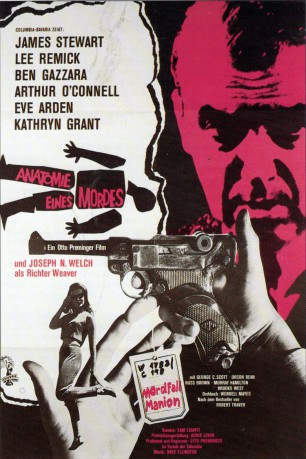

#9867 Anatomie eines Mordes
Alternativ: Anatomy of a Murder
Auszeichnungen: für 7 Oscars nominiert
 
 IMDB-Wertung: 8.1 / 10
IMDB-Wertung: 8.1 / 10  Metascore: 0
Metascore: 0 
Leutnant Manion hat die Vergewaltigung seiner Frau Laura gerächt. Mit der Ermordung des Gewalttäters. Auf diese Tat steht nur ein Urteil, die Todesstrafe. Rechtsanwalt Dr. Biegler versucht, den Kopf des Leutnants aus der Schlinge zu ziehen. Jedoch sprechen alle Beweise gegen seinen Mandanten. Auch die bildhübsche Laura gerät bald ins Zwielicht, denn ihr Vergewaltiger galt als ehrenwerter Mann. Entspricht ihre Aussage wirklich den Tatsachen? Dr. Biegler sieht nur einen Ausweg Er muss die Unzurechnungsfähigkeit seines Mandanten beweisen. Der Anwalt kämpft verzweifelt gegen die Welle der erdrückenden Indizien. Im letzten Moment findet sich noch ein neuer Kronzeuge, der den Vergewaltiger schwer belastet. Aber wird dies reichen? Dr. Biegler beginnt sein Schlussplädoyer mit dem Mut der Verzweiflung.
Jahr: 1959
Dauer: 160 Minuten
FSK: 16
Land: USA Studio: Columbia Pictures CorporationTonspuren: DD2.0 - ,
Untertitel: Englisch,
Auflösung: 1080p (1920x1040) Größe: 11468 MB
Genre: Thriller, Drama, Krimi, Mystery
Regisseur: Otto Preminger
Drehbuch: Wendell Mayes, John D. Voelker
Soundtrack: Duke Ellington
Darsteller:
 James Stewart als Paul Biegler
James Stewart als Paul Biegler Lee Remick als Laura Manion
Lee Remick als Laura Manion Ben Gazzara als Lt. Frederick Manion
Ben Gazzara als Lt. Frederick Manion Arthur O'Connell als Parnell Emmett McCarthy
Arthur O'Connell als Parnell Emmett McCarthy- Eve Arden als Maida Rutledge
- Kathryn Grant als Mary Pilant
 George C. Scott als Claude Dancer
George C. Scott als Claude Dancer Orson Bean als Dr. Matthew Smith
Orson Bean als Dr. Matthew Smith Murray Hamilton als Alphonse Paquette
Murray Hamilton als Alphonse Paquette- Brooks West als Dist. Atty. Mitch Lodwick
- Ken Lynch als Det. Sgt. James Durgo
 John Qualen als Deputy Sheriff Sulo
John Qualen als Deputy Sheriff Sulo Howard McNear als Dr. Dompierre
Howard McNear als Dr. Dompierre- Alexander Campbell als Dr. W. Gregory Harcourt
- Joseph Kearns als Lloyd Burke
- Joseph N. Welch als Judge Weaver
- Duke Ellington als Pie Eye (uncredited)
- Russ Brown als George Lemon
- Ned Wever als Dr. Raschid
- Jimmy Conlin als Clarence Madigan
- Royal Beal als Sheriff Battisfore
- Don Ross als Duane 'Duke' Miller
- Lloyd Le Vasseur als Court Clerk
- James Waters als Army Sergeant 1st Class
- Snuffy the Dog als Muff (uncredited)
- Irv Kupcinet als Distinguished Gentleman (uncredited)
- Chuck Ramsay als Orderly (uncredited)
- Mrs. Joseph Welch als Juror (uncredited)
Datei: X:\1950-1959\Anatomie eines Mordes (1959, FSK16, 1920x1040).mkv seit 08.11.2018
Festplatte: HD 1900-1970
 Es gibt insgesamt 141 Filme in der Gruppe '1950-1959'
Es gibt insgesamt 141 Filme in der Gruppe '1950-1959'